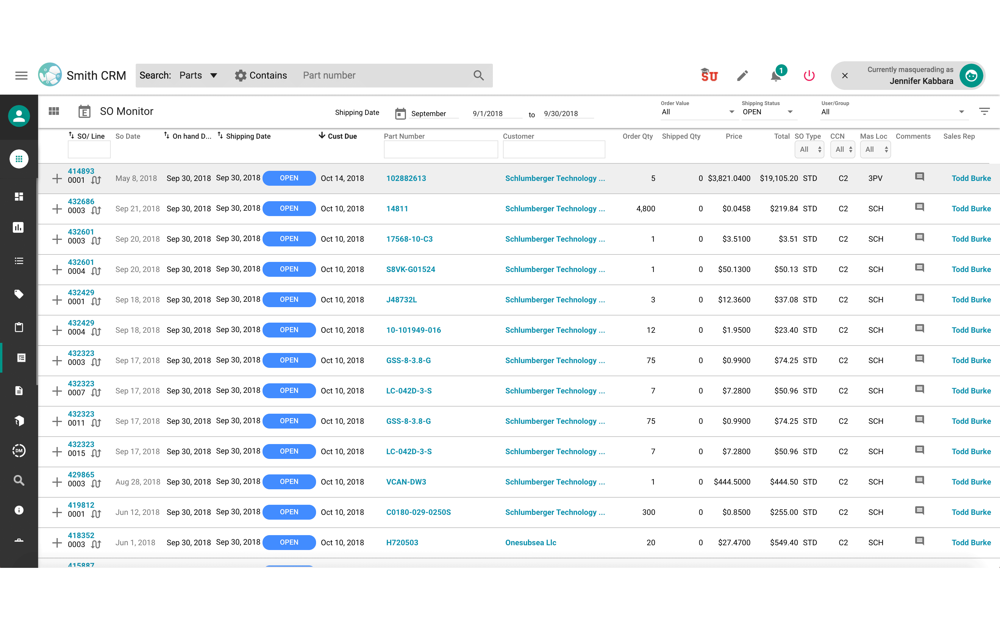
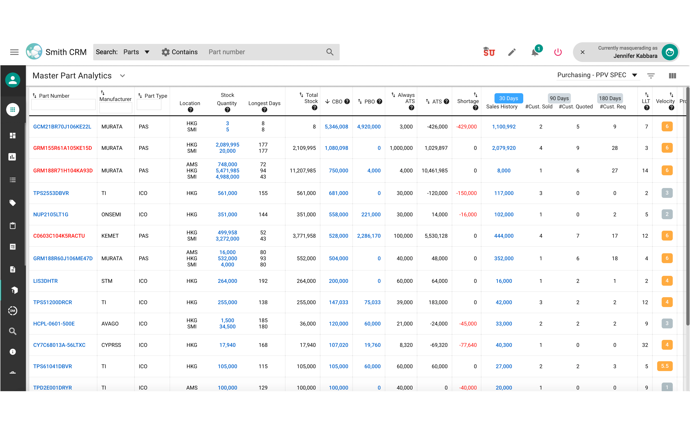
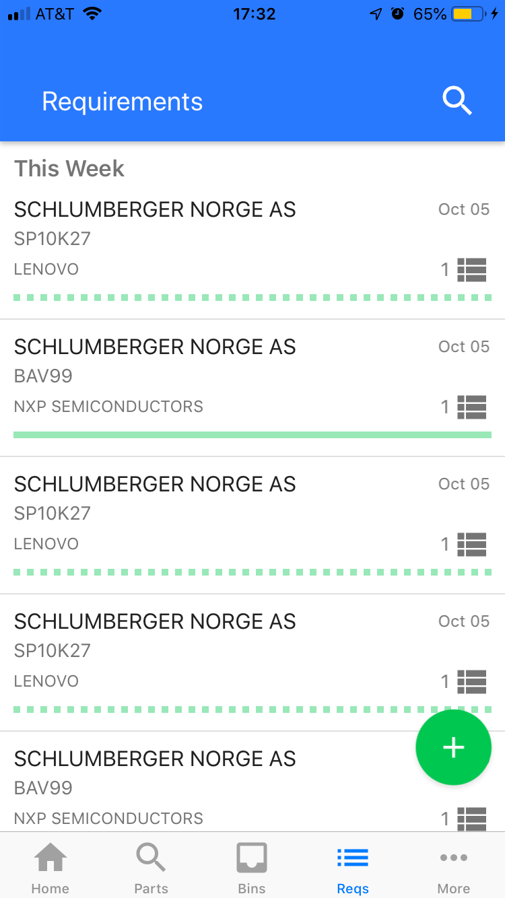
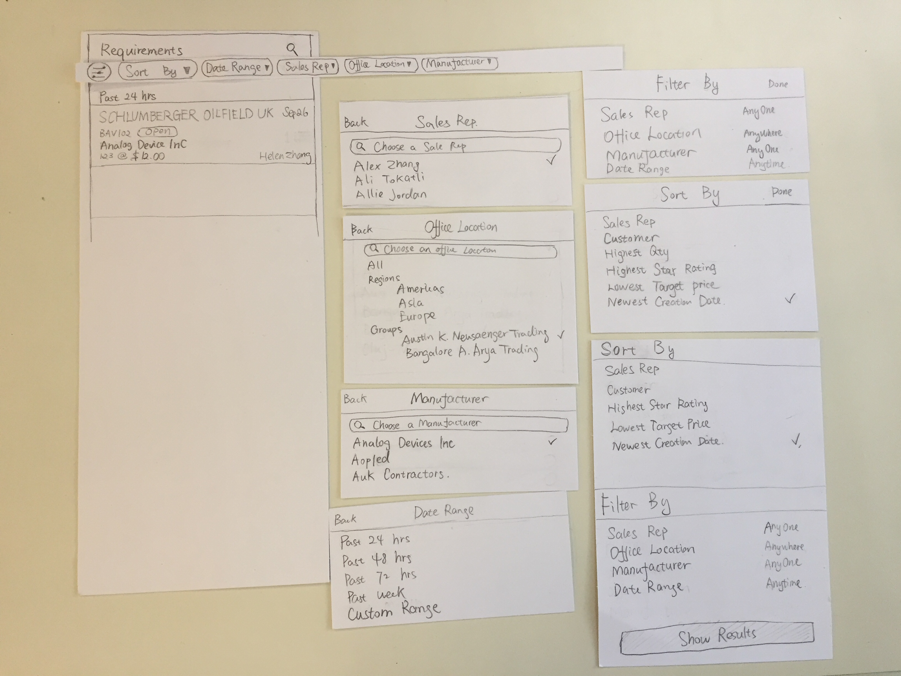

Designed & Developed by Yueyang Wu
© 2017
LOOP Design
UX design projects
Smith&Associates is a leading supplier of CPUs, memory, integrated circuits, and other electronic components. The typical transaction consists of two parts: A Smith trader reach out to the customer, and then Smith buyers buy the parts from the vendor.
CASE 1: PO/SO Allocation in CRM
Goal
The task for our design team is to do a redesign of the existing PO/SO allocation to make sure the parts come into Smith inventory can go to the correct trader's sales order.
Challenge
1. Multiple user groups need different information
The allocation process is done by buyers, traders and admin team to identify which orders of PO/SO are allocated with each other. Different user groups view allocation in different ways. We need to identify and show all key information that our users care about in the allocation process.2. Try not to create new pages
IT team agrees that this implementation should use as much exisiting CRM pages to maximize use. The goal is to analyze current user workflows and enhance them to include allocation so that it will stay in the place where all user groups feel comfortable with.How people do allocation now
We interviewed commodity manager, inventory management team, PPV team to understand their current workflow and frustrations during the PO/SO allocation process. We find out that the current PO/SO allocation is not part of the process. The trader might tell Asia to buy the parts last night to secure them, and they put in the SO in the next day. Buyers don't have the chance to allocate to a SO because the SO wasn't there.
For PPV team, they buy large amount of parts based on analysis without the request from a sales order. The current PPV analyst would write down all the sales orders and the avaliable purchase orders for a part and try to link them based on the priority so that POs that have the earliest arrival date can be matched to SOs that have the earliest shipping date.
To begin with, we decided to have the PO/SO in the PO create, SO Monitor screens to make PO/SO allocation part of the process. When the user is on the PO listing screen, the right drawer brings up related SOs. When the user is on the SO listing screen, the right drawer brings up related POs. In the current association, users only able to do the allocation of inbound purchase orders. The new PO/SO allocation should able to see POs that are both inbound and in stock. After the low-fidelity wireframes are created, I met with users to confirm all the information they care about is shown on the two views and iterate the design based on user feedback.
CASE 2: Requirement redesign for buyer app
The goal: Define the filters and listing view
The requirement listing for traders' app is on the right. Buyers view the requirement in a different way so that we need to redesign the requirement to fit the buyers need.
Testing and iterate the design
Based on the research feedback, we were able to define a rough idea about the filter and sorting options. Buyers deal with requirement by requirement line so that we decided to use a line view on buyers app. I tested the low fidelity wireframe with the buyers and ask their preferance on the filters and sorting options.
Deliverable